DoSA：Dots 稀疏 attention
Fanxu Meng* Taosong Fang*†
Dots Studio，小红书公司
mengfanxu@xiaohongshu.com fangtaosong@xiaohongshu.com
https://github.com/llm-sys/flash-indexer
摘要
稀疏 attention 只访问少量 key，但找到这些 key，仍可能需要用每个索引器头为每个 key 评分。我们提出 DoSA（Dots Sparse Attention），一种在保留精确 token 选择的同时，使这部分计算按条件执行的无损方法。其核心观察是，Top-K 选择需要的是足以排除候选的证据，而不一定是候选的完整分数。种子集合提供入选阈值的下界。非负头投影和联合残差界为正贡献提供上界，而利用激活信息的聚合则为负权重头所减去的量提供界。该判定证书将完整评分集中到仍可能入选的候选上；精确分数过滤进一步减少写回和选择工作。我们建立了这一判定证书及其精确选择条件，并分析几何结构与选择裕量如何决定其有效性。在英文、中文和代码工作负载上，我们的 GPU 实现相对 SGLang 和 LiteTopK，分别使完整索引器最高加速 2.74 倍和 1.69 倍。在 GLM-5.2 和 DeepSeek-V3.2 上的端到端评估中，相对这两个基线，首 token 延迟分别最高获得 1.94 倍和 1.50 倍加速。
1. 引言
条件计算能够扩大模型容量，同时对每个输入仅激活模型的一部分。MoE 模型将这一原则用于前馈网络（Fedus et al., 2022）；随着上下文增长，attention 提供了另一种互补的机会。稀疏 attention 只访问少量 key，但识别这些 key，仍可能需要一次稠密扫描。DeepSeek Sparse Attention（DSA）通过多头索引器及其后的 Top-K 来选择 token（DeepSeek-AI, 2025）；每个分数都需要点积、ReLU 激活以及带符号的加权归约。这使稀疏 attention 内部仍存在稠密评分瓶颈，限制了像 MoE 那样将容量与实际执行的计算分离。我们通过在保留原始路由规则的同时，让 token 选择按条件执行，向可扩展 attention 迈出一步。
图 1 展示了由此产生的瓶颈。在约一百万个 token 时，索引器占 GLM-5.2 和 DeepSeek-V3.2 的 prefill GPU 时间分别为 73.0% 和 90.8%，而在逻辑矩阵 FLOPs 中的占比分别为 47.4% 和 83.2%。随着上下文增长，选择关注哪些位置的开销，可能主导稀疏 attention 自身的成本。时间占比与算术运算占比之间的差距，也促使我们在减少评分计算的同时，减少选择和内存流量。
近期系统对选择过程进行了加速：Guess-Verify-Refine（GVR）利用 decoding 中的时间相关性（Cheng et al., 2026）；DeepSelect 将已物化的分数流式送入有界缓冲区（Qian et al., 2026）；LiteTopK 则将评分与候选过滤融合，避免稠密分数写回（Yin et al., 2026）。这些路径仍要求对每个 key 计算全部头。相比之下，MISA 使用更少的头进行筛选，再用完整索引器对候选重新排序（Zhou et al., 2026），但重新排序无法找回已被排除的入选项。我们能否避免完整分数计算，同时证明筛选不会丢弃任何入选项？
原理很简单：如果一个 token 的分数上界低于真实 Top-K 阈值的某个下界，它就不可能进入 Top-K。根据已有的精确检索原则（Turtle & Flood, 1995; Broder et al., 2003），由至少 \(K\) 个可见 key 构成的子集，可以通过其第 \(K\) 大分数提供这一阈值下界。（本句原文跨至第 2 页，已接续。）
*同等贡献。作者顺序由抛硬币决定。
†通讯作者。
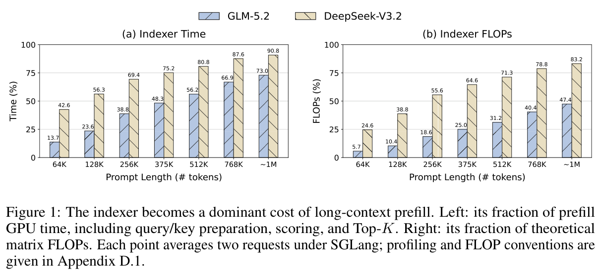
（本页开头关于子集第 \(K\) 大分数及精确检索原则的跨页句，已接续至第 1 页。）挑战在于，以显著低于计算分数本身的成本，构造一个紧的界。对于带符号的 ReLU 索引器，丢弃正权重头是不安全的；丢弃负权重头虽然安全，却可能使界很松。有效的判定证书必须利用各个头的几何结构与激活结构。
DoSA 是一种无损优化：它通过计算选定的头，并为其余头建立界，来构造每个 token 特有的界。非负投影复用保留头的点积，联合残差界利用被省略的正权重头之间的依赖。利用激活信息的聚合，为被省略的负权重头所减去的量提供下界。这些 query 侧的量可在不同 key 之间复用。图 2 展示该判定证书如何带来三种互补的节省：减少分数计算、减少分数写入，以及减少 Top-K 工作。通过筛选的候选会得到完整的原始分数，且只有达到种子集合所给阈值的分数，才会写出以供最终选择。
我们的贡献包括：针对带符号 DSA 分数设计的判定证书；将其松弛量与选择裕量、头预算联系起来的分析；以及将经过证明的候选排除转化为更少计算和流量的 GPU 实现。在英文、中文和代码工作负载的全部 60 种微基准配置中，DoSA 均优于两个基线：相对 SGLang，完整索引器最高加速 2.74 倍；相对 LiteTopK，最高加速 1.69 倍。在约 1M 个 token 时，DoSA 在 GLM-5.2 和 DeepSeek-V3.2 上相对 SGLang 分别获得 1.86 倍和 1.94 倍首 token 延迟（TTFT）加速，端到端延迟接近减半。
2. 方法
2.1. 问题定义
对于具有 \(H\) 个索引器头的固定 query，令 \(\mathbf q_h\in\mathbb R^D\) 为第 \(h\) 个 query 向量，\(w_h\in\mathbb R\) 为其权重，\(\mathbf k_i\in\mathbb R^D\) 为 token \(i\) 的 key。记 \([x]_+=\max(x,0)\)。索引器分数为
\[ s_i=\sum_{h=1}^{H}w_h[\mathbf q_h^\top\mathbf k_i]_+,\qquad i\in\Omega,\qquad\text{(1)} \]其中，\(\Omega\) 仅包含可见 key。
当 \(|\Omega|\ge K\) 时，我们的目标是找出分数最高的 \(K\) 个可见 key，同时避免对不可能进入该集合的 key 进行全头评分。
2.2. 种子阈值与保留头
选择互不相同的可见 key 构成 \(\mathcal S\subseteq\Omega\)，使 \(|\mathcal S|\ge K\)，并将 \(\tau=\tau_K(\mathcal S)\) 设为它们的第 \(K\) 大完整分数。该子集提供 \(K\) 个见证：
\[ \tau_K(\mathcal S)\le\tau_K(\Omega),\qquad s_i\le U_i<\tau_K(\mathcal S) \Longrightarrow i\notin\operatorname{TopK}(\Omega).\qquad\text{(2)} \]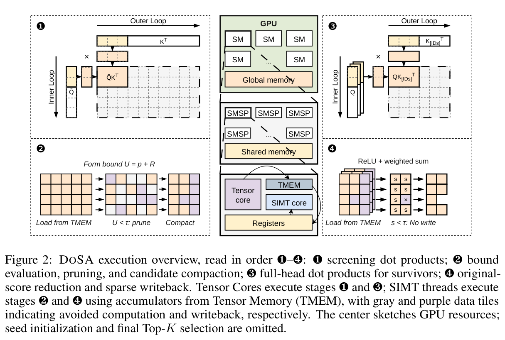
因此，\(\tau_K(\mathcal S)\) 是真实 Top-K 阈值的下界，\(U_i\) 是 token 分数的上界：两者严格分离，就能证明该 token 可被排除。较差的种子会削弱过滤效果，而增加精确分数只能提高阈值下界。
若对每个头都只求界，可能所有候选都仍高于阈值。因此，我们直接计算选定的那些难以为其贡献建立紧界的头。
令 \(R\) 为保留头的集合，含 \(1\le r<H\) 个头。定义 \(\mathcal H_+=\{h:w_h>0\}\) 和 \(\mathcal H_-=\{h:w_h<0\}\)。如果 \(|\mathcal H_+|\le r\)，就保留全部正权重头，并按 \(|w_h|\lVert\mathbf q_h\rVert_2\min(p_h,1-p_h)\) 的优先级，用负权重头填满剩余位置，其中 \(p_h\) 是头 \(h\) 在抽样种子 key 上的激活频率。这优先选择强度大且激活难以预测的头。否则，按 \(w_h\lVert\mathbf q_h\rVert_2\) 保留最强的 \(r\) 个正权重头。零权重头无需贡献。记 \(P=\mathcal H_+\setminus R\)，\(N=\mathcal H_-\setminus R\)。保留头的贡献
\[ S_R(\mathbf k_i)=\sum_{j\in R}w_j[\mathbf q_j^\top\mathbf k_i]_+\qquad\text{(3)} \]直接计算。筛选时，不逐一计算 \(P\) 和 \(N\) 中被省略的头；下两小节将为它们的贡献建立界。证明对任意 \(R\) 均成立；其选择影响效率与界的紧致程度。
2.3. 被省略的正权重头的上界
对于每个 \(h\in P\)，选择一个保留头作为锚点，并进行非负投影：
\[ j_h^\star=\arg\max_{j\in R}\frac{[\mathbf q_h^\top\mathbf q_j]_+}{\lVert\mathbf q_j\rVert_2},\quad \beta_h=\frac{[\mathbf q_h^\top\mathbf q_{j_h^\star}]_+}{\lVert\mathbf q_{j_h^\star}\rVert_2^2},\quad \mathbf d_h=\mathbf q_h-\beta_h\mathbf q_{j_h^\star}.\qquad\text{(4)} \]范数为零的锚点，其匹配分数和系数均为零。根据 ReLU 的次可加性、正齐次性以及 Cauchy–Schwarz 不等式，有
\[ [\mathbf q_h^\top\mathbf k_i]_+\le\beta_h[\mathbf q_{j_h^\star}^\top\mathbf k_i]_++\lVert\mathbf d_h\rVert_2\lVert\mathbf k_i\rVert_2.\qquad\text{(5)} \]投影部分复用了已经计算的点积。非负投影使残差范数最小，因此在这种形式的单锚点界中，得到最小的一致范数余量（附录 B.1）。（本句原文跨至第 4 页，已接续。）
（本页开头关于单锚点一致范数余量的跨页句，已接续至第 3 页。）定义
\[ \widetilde w_j=w_j+\sum_{\substack{h\in P\\j_h^\star=j}}w_h\beta_h,\qquad E_P=\sum_{h\in P}w_h\lVert\mathbf d_h\rVert_2.\qquad\text{(6)} \]于是，保留项与被省略的正贡献项合起来，以 \(\sum_{j\in R}\widetilde w_j[\mathbf q_j^\top\mathbf k_i]_++E_P\lVert\mathbf k_i\rVert_2\) 为上界。折叠权重只属于筛选方案；它们不修改模型参数。若 \(P\) 为空，则 \(E_P=0\)，且 \(\widetilde w_j=w_j\)。
被省略的残差也共享同一个 key。对 \(h\in P\)，令 \(\mathbf u_h=w_h\mathbf d_h\)。一个联合余量为
\[ E_P^{\rm joint}=\tfrac12\left(\left\lVert\sum_{h\in P}\mathbf u_h\right\rVert_2+\sqrt{\sum_{h,\ell\in P}|\mathbf u_h^\top\mathbf u_\ell|}\right)\le E_P.\qquad\text{(7)} \]它将 \(\sum_{h\in P}[\mathbf u_h^\top\mathbf k_i]_+\) 界定在 \(E_P^{\rm joint}\lVert\mathbf k_i\rVert_2\) 以内，因此可以替代 \(E_P\)。这一收紧利用了残差的几何结构，无需额外读取 key。附录 A.1 证明这一结论及其分组形式。
2.4. 被省略的负贡献的下界
负权重头会从分数中减去一些量。为了构造上界，我们聚合子集 \(A\subseteq N\)，并忽略其余头；省略负贡献只会提高这个界。定义
\[ \mathbf a_A=\sum_{h\in A}|w_h|\mathbf q_h,\qquad L_N(\mathbf k_i)=[\mathbf a_A^\top\mathbf k_i]_+\le\sum_{h\in N}|w_h|[\mathbf q_h^\top\mathbf k_i]_+.\qquad\text{(8)} \]ReLU 的次可加性保证，\(L_N\) 不会超过被省略的负权重头实际减去的量。为什么不直接把所有头都纳入 \(A\)？未激活的头经自身 ReLU 后贡献为零，但在聚合 ReLU 之前，它的负点积可能抵消已激活头的正点积。因此，加入这类头可能削弱对负贡献的估计，使分数上界变松。
我们利用种子激活模式来减少这种抵消。对抽样种子 key，记录 \(M_i=\{h\in N:\mathbf q_h^\top\mathbf k_i>0\}\)，并令 \(p_h\) 为头 \(h\) 的出现频率。我们选择逐分量多数支撑集 \(A=\{h\in N:p_h\ge1/2\}\)。这使归一化负贡献松弛量的一个可分离上界最小；与此同时，上述保留负权重头的优先级，会移除该替代目标中最大的剩余项（附录 B.2）。如果一个新 key 的激活集合恰好为 \(A\)，聚合就是精确的。其他模式仍然安全，但得到的界可能更松。这些频率指导效率，并不决定正确性。
2.5. 分数界与候选细化
结合公式（5）至（8），得到我们的分数判定证书：
\[ \boxed{U_i=\sum_{j\in R}\widetilde w_j[\mathbf q_j^\top\mathbf k_i]_++E_P\lVert\mathbf k_i\rVert_2-[\mathbf a_A^\top\mathbf k_i]_+,\qquad s_i\le U_i.}\qquad\text{(9)} \]一个聚合方向替代了任意多个被省略的负权重头。它的效用取决于激活的一致性，而正贡献余量取决于方向相似性。
图 2 将判定证书对应到四个阶段。阶段 ❶ 在不同 key 分块间复用筛选行 \(\widetilde Q\)（保留行和辅助行）；外层循环与内层循环分别遍历 key 和 query 行。阶段 ❷ 构造 \(U=p+R\)：\(p\) 结合公式（9）中的保留项与聚合项，标量 \(R=E_P\lVert\mathbf k_i\rVert_2\) 是残差余量，与头集合 \(R\) 不同。FP8 还会加入数值保护（附录 C）。
阶段 ❷ 丢弃满足 \(U_i<\tau\) 的 key，并紧凑存放通过筛选的候选 ID。阶段 ❸ 收集它们的 key，并计算全部 \(H\) 个原始头。阶段 ❹ 应用公式（1）中的原始 ReLU 与权重，仅保留满足 \(s_i\ge\tau\) 的分数，与种子记录一起进行选择。在阶段 ❷ 和 ❹ 的数据分块中，灰色标示省去的计算，紫色标示省去的写回。两个过滤器都保留等于阈值的情况；界从不替代最终分数。
只要种子阈值有效，且没有丢失仍可能入选的候选，这一过程就能保持精确 Top-K 选择；附录 A 给出完整算法、形式化保证（定理 1）及证明。
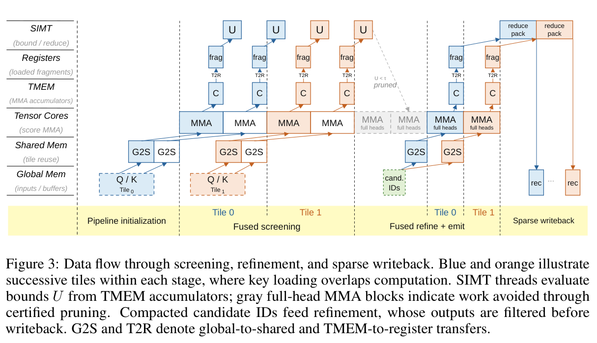
3. GPU 内核设计
经过证明的剪枝减少了算术运算，但不规则的候选集合可能限制 GPU 利用率，并引入分散的 key 访问。在 prefill 阶段，我们将 DoSA 组织为一次规则筛选遍历，随后进行稀疏的全头细化（图 3）。三个设计选择将判定证书转化为高效执行：对 query 分组以进行 Tensor Core 计算，在细化时共享 key 加载，以及减少送入选择阶段的记录。
Query 分组与流水线筛选。我们将保留头预算相近的 query 分组为固定宽度分块，使少量筛选内核能够使用稠密 Tensor Core MMA。保留的 query 行、折叠权重以及两个 FP8 辅助行只准备一次，并在不同 key 分块间复用。可见种子 key 的精确分数初始化每个 query 的阈值，该阈值在扫描期间保持不变。专用 warp 发出异步 key 加载与 MMA 操作，消费者 warp 则根据 TMEM 累加器计算界。缓冲的 key 分块使加载与计算重叠。仅当 \(U_i^{\rm num}<\tau\) 时才排除 key；warp ballot 将候选是否通过的判定打包为紧凑掩码，供细化阶段使用。
细化阶段共享 key 访问。逐 query 独立收集 key，会重复加载被多个 query 选中的 key。因此，我们将候选掩码压缩为共享细化流与逐 query 细化流。在四个 query 组成的组中，若一个 key 至少通过两个界的筛选，且位于该组共同的可见范围内，就进入共享流；其他候选使用逐 query 流。一次共享 key 加载为整组提供全头评分，之后执行原始 ReLU、权重与归约。这种组织方式用一些额外的 query–key 计算换取更少的 key 传输。每个分数都根据对应 query 的阈值过滤，从而保持精确选择。
紧凑写回与精确选择。细化将完整分数计算与阈值过滤融合：只有满足 \(s_i^{\rm ref}\ge\tau\) 的分数才产生输出记录。这些记录存储紧凑的单调分数编码和精确 key ID，减少 HBM 流量与选择输入。细化之后，Top-K 选择保留编码严格高于边界编码的记录，并使用原始分数处理处于边界编码的候选。综合而言，筛选减少全头算术运算，共享细化复用 key 数据，紧凑记录则降低分数写入与选择的成本。
Decoding。每步 query 很少，因此 decoding 在 query 组间复用 key 的机会有限。我们保留完整 FP8 评分，并利用时间连贯性减少选择工作。近期步骤中选出的互不相同的 key 提供见证：它们在当前 query 下的分数，给出 Top-K 阈值的保守下界。达到或超过该界的分数被紧凑存放，用于精确选择；该过程还会映射选中索引，并更新见证。
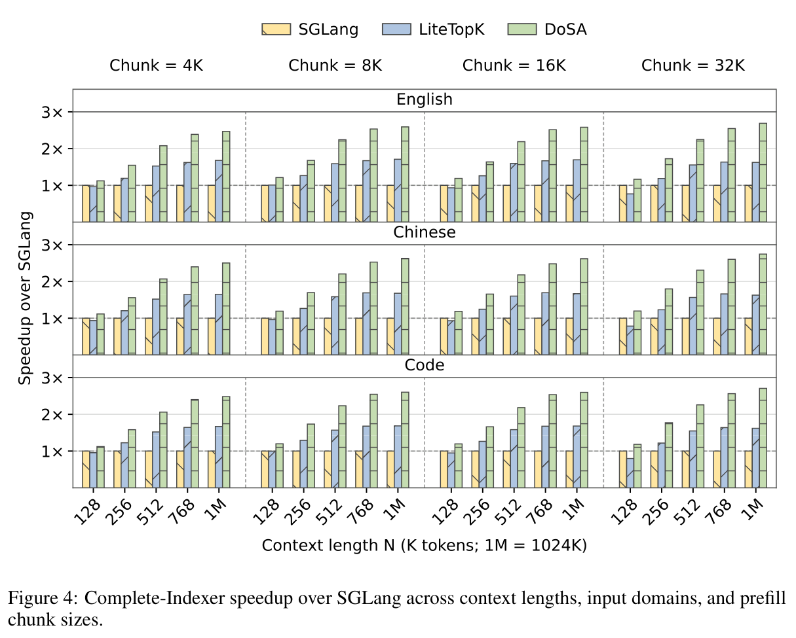
4. 实验
相对 SGLang，DoSA 的完整索引器最高获得 2.74 倍加速，TTFT 最高获得 1.94 倍加速。我们研究这些收益如何随上下文长度、输入领域和 prefill 分块大小变化，然后分别考察筛选与稀疏写回的贡献。
4.1. 实验设置
模型与硬件。我们在 NVIDIA GPU 上评估 GLM-5.2 和 DeepSeek-V3.2。两者分别使用 32 个和 64 个索引器头，Top-K 均为 2,048。微基准在单个 GPU 上运行 GLM-5.2。端到端推理使用八路张量并行；GLM-5.2 和 DeepSeek-V3.2 的 prefill 分块大小分别为 32K 和 16K 个 token。
工作负载。我们使用 InfiniteBench（Zhang et al., 2024）的英文书籍、中文书籍和代码输入，并补充 Project Gutenberg1 与 SQLite 源代码2，构成长上下文。对每个领域，我们按 token 化后的长度选择样本，并截取 128K 到约 1M 个 token 之间的连续上下文。微基准使用 1M token 输入的前缀；判定证书分析覆盖整个长度范围内的样本。
基线。我们与 SGLang v0.5.18（Zheng et al., 2023）和 LiteTopK（Yin et al., 2026）比较。SGLang 计算完整多头分数，随后进行 Top-K 选择。LiteTopK 将评分、候选过滤与选择融合，减少中间内存流量。DoSA 进一步利用判定证书跳过不必要的全头评分，从而减少计算。
1https://www.gutenberg.org/ebooks/100；https://www.gutenberg.org/ebooks/3200
2https://www.sqlite.org/amalgamation.html
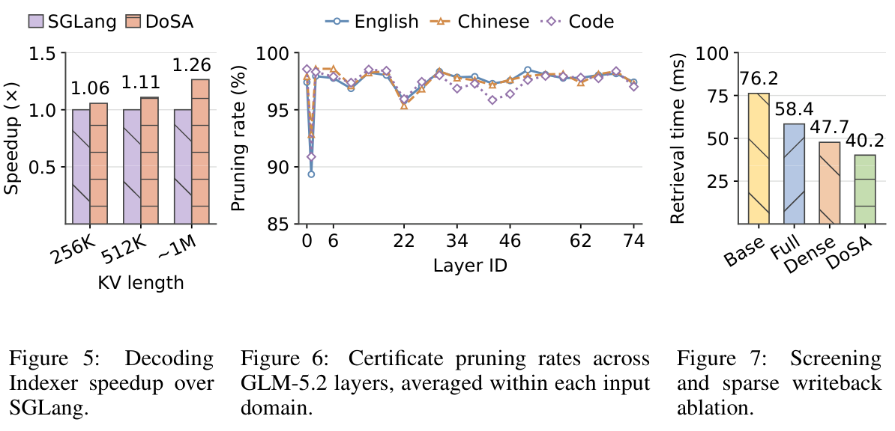
测量。我们使用模型运行得到的激活，在 warmup 后通过 CUDA event 测量完整索引器延迟。端到端性能用单个请求的首 token 延迟（TTFT）衡量，并在请求之间清空前缀缓存。
4.2. 索引器微基准
Prefill 性能。我们将上下文长度设为 128K、256K、512K、768K 和 1M 个 token，prefill 分块大小设为 4K、8K、16K 和 32K。每种配置都在全部 21 个产生索引的层上重放最后一个 query 分块，所测延迟包含 query/key 准备。
DoSA 在全部 60 种配置中都是最快的方法（图 4）。相对 SGLang 的加速范围为 1.12–2.74 倍，在 512K token 及以上的每种配置中都超过 2 倍。相对 LiteTopK，DoSA 获得 1.17–1.69 倍加速。在 1M 时，相对这两个基线的收益分别达到 2.47–2.74 倍和 1.47–1.69 倍。
分析。上下文长度比 query 分块大小更能推动收益。对于 16K query 的英文输入，加速比从 128K 时的 1.19 倍增加到 1M 时的 2.58 倍。相比之下，在 1M 时将 query 分块从 4K 增大八倍至 32K，加速比仅从 2.47 倍变为 2.69 倍。更长的上下文扩大每个 query 需要计算的 key 集合，同时复用其判定证书的准备结果。增大分块大小则会扩大所有方法的 query batch。因此，DoSA 主要受益于沿很长的 key 维度减少工作，并且在各种 prefill 批处理选择下都保持有效。
与 LiteTopK 的比较，将这一效果与融合的效果区分开。融合减少分数流量和选择开销，但完整多头计算仍然保留。经过证明的候选排除移除了这部分剩余工作，解释了为什么随着上下文增长，DoSA 的领先幅度持续扩大。附录 D.4 给出逐层检索结果。
Decoding 性能。我们从 HELMET、InfiniteBench 和 LongBench v2（Yen et al., 2024; Zhang et al., 2024; Bai et al., 2024）构造文档分析请求，并从 SQLite 构造代码审查请求。每种工作负载都使用等长请求填满约 1M token 的 KV cache。在请求长度为 256K、512K 和约 1M 时，DoSA 分别使 decoding 索引器加速 1.06 倍、1.11 倍和 1.26 倍（图 5）。这里的收益来自减少选择工作：近期选中的 key 提供阈值，以进行紧凑选择，即使每步 query 很少，也能使 decoding 受益。
各层剪枝情况。我们将剪枝率定义为 \(p=1-N_{\rm keep}/N_{\rm screen}\)，其中 \(N_{\rm screen}\) 和 \(N_{\rm keep}\) 分别统计判定证书筛选前后的 query–key 对数量。图 6 表明，在每个领域的 21 层中，有 20 层的剪枝率超过 95%，各领域的平均剪枝率为 97.2%–97.5%。英文、中文和代码表现出相似的变化曲线。
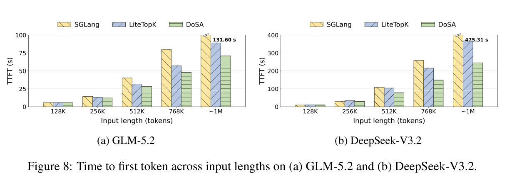
变化与模型深度有关：三个领域的最低剪枝率都出现在第 1 层，即便如此仍排除了 89%–93% 的 query–key 对，其余各层都超过 95%。这种共同模式表明，层相关的分数几何结构比输入领域有更强影响。从附录 B.3 的选择裕量分析来看，大多数 key 的分数都充分低于 Top-K 边界，即使判定证书存在松弛量，也能将它们排除。这样，全头评分便集中在仍有竞争力的少量候选上。
4.3. 端到端推理性能
我们在 128K 到约 1M token 的书籍与代码工作负载上测量 TTFT，使用 TP8，以及上述针对不同模型的 prefill 分块大小。
在两个模型的 1M token 输入上，DoSA 都使 TTFT 接近减半（图 8）。在 GLM-5.2 和 DeepSeek-V3.2 上，相对 SGLang 分别获得 1.86 倍和 1.94 倍加速，相对 LiteTopK 分别获得 1.26 倍和 1.50 倍加速。相对 LiteTopK 的收益表明，即使评分和选择已经融合，避免分数计算仍能改善服务延迟。
分析。索引器占比不断增长，解释了为何端到端收益随上下文长度增强。设索引器时间占比为 \(f\)，索引器加速比为 \(s\)，Amdahl 定律给出的整体加速比为 \(S=(1-f+f/s)^{-1}\)。对 GLM-5.2，索引计算从 128K 时占 prefill GPU 时间的 23.6%，增长至 1M 时的 73.0%；DeepSeek-V3.2 在 1M 时达到 90.8%（图 1）。随着这一占比提高，加速索引计算便能消除更大比例的请求延迟。Attention 与前馈层仍然贡献请求延迟，因此 TTFT 加速比低于索引器加速比。这既解释了图 8 中不断增加的收益，也说明了针对长上下文服务优化索引计算的价值。
4.4. 消融研究
我们分别启用筛选与稀疏写回：Base 两者都不使用，Full 仅使用稀疏写回，Dense 仅使用筛选，DoSA 则结合两者。工作负载是来自 LOFT（Lee et al., 2024）的 SciFact 检索样例，含 16K 个 query 和 896K 个 key；我们对全部 21 个产生索引的层求平均检索延迟。
仅筛选使延迟降低 37.4%，仅稀疏写回使延迟降低 23.4%（图 7）。两者结合，使检索延迟降低 47.3%，相对 Base 获得 1.90 倍加速。在 Full 上增加筛选进一步节省 31.1%，在 Dense 上增加稀疏写回则节省 15.7%。
分析。Full 避免了稠密分数写回，但仍然付出每个头的计算成本；它与 DoSA 的剩余差距，揭示了仅靠融合无法去除的计算。Dense 做出相反权衡：筛选减少分数计算，但稠密中间结果仍持续消耗 HBM 带宽。因此，稀疏写回带来的额外收益说明，剪枝需要匹配的执行策略，才能兑现其收益。
判定证书组件消融进一步揭示了剪枝为何有效。去除负贡献聚合，会使候选存活比例从 2.65% 上升到 95.06%（附录 D.2），几乎消除排除效果。因此，要为带符号的索引器分数得到紧的判定证书，负贡献不可或缺。附录 D.3 展示这一效果如何随层变化。
5. 相关工作
使用 lightning indexer 的稀疏 attention。稀疏 attention 限制 query–key 交互。NSA 将 token 压缩与细粒度选择结合（Yuan et al., 2025）；MoBA 使用专家路由进行块 attention（Lu et al., 2025）；DSA 通过学习得到的多头索引器选择 token（DeepSeek-AI, 2025）。MiniMax-M3 将块 attention 与学习式索引相结合（Lai et al., 2026）。IndexCache 跨层复用索引（Bai et al., 2026; Z.ai, 2026; Tencent Hy Team, 2026），SparDA 则预测下一层的选择（Fu et al., 2026）。HISA 使用分层块索引与 token 细化，实现 token 级 attention（Xu et al., 2026）；DeepSeek-V4.1-Flash 与 LongCat-2.0 将分层索引和跨层复用结合（DeepSeek-AI, 2026; Meituan LongCat Team, 2026）。PIVOT 在 query 组间共享代理扫描（Liu et al., 2026）。MISA 选择索引器头，并可选用完整分数重新排序（Zhou et al., 2026）；Qwen3.8-Flash-Next 的索引器仅使用四个 query 头（Qwen Team, 2026）。这些方法不一定保持原始完整评分器的 Top-K，而且重新排序无法找回已被排除的 token。DoSA 则在原始评分器下，为候选排除提供证明。
精确 GPU 选择与融合评分。基数选择通过连续的数位直方图缩小 Top-K 候选范围，无需对分数完全排序（Zhang et al., 2023）。GVR 利用时间相关性预测 decoding 阈值，通过统计已物化分数来验证阈值，并在共享内存中细化候选（Cheng et al., 2026）。DeepSelect 将已物化的分数行流式送入有界候选缓冲区，并使用单调增加的阈值（Qian et al., 2026）。LiteTopK 将全头评分与在线候选过滤融合，减少分数写回与选择输入（Yin et al., 2026）。这些方法加速 Top-K 选择，但在 DSA 中仍依赖每个 key 的全头分数。DoSA 在流式阈值与紧凑选择的基础上增加分数上界，从而在全头计算之前排除 key。
经典文档检索中的分数界。MaxScore（Turtle & Flood, 1995）与 WAND（Broder et al., 2003）使用词项贡献上界及运行中的 Top-K 阈值，跳过不必要的文档评分。Block-Max WAND 为倒排列表的各个块收紧这些界（Ding & Suel, 2011）。DoSA 将同样的剪枝原则用于 DSA 带符号的多头分数。块级上界必须覆盖块内每个 key，因此对单个候选而言可能很松。这促使我们构造更紧的逐 key 界，利用 query 头的几何结构与激活结构，在全头评分之前排除候选。
6. 局限与结论
DoSA 表明，精确 token 选择所需的工作，可以少于计算每个 token 的完整分数。带符号头的判定证书、原始分数补全与稀疏写回，将这一观察转化为 attention 索引器内部的条件计算。Query 几何结构决定有多少工作可以被证明无需执行；头预算分析则明确了获得这种判定证书的成本。
TTFT 结果表明，长上下文下的收益不断增加；工作负载分析解释了筛选成本与避免完整评分之间的权衡。DoSA 仍然扫描每个 key，短上下文或松的界可能使节省不足以抵消筛选成本。数值保证要求相对于原始评分器进行保守计算；在分数并列时，有效的 Top-K 集合不一定产生完全相同的生成文本。这些测量确立了计算方面的收益，并不意味着在超出模型训练上下文的情况下提高任务准确率。
未来工作。在训练阶段对判定证书的松弛量进行正则化，可以促使索引器的计算更容易被安全跳过。沿用文档检索中的上界剪枝思路，未来工作可利用紧凑摘要，将逐 key 判定证书扩展为 key 块的界。若某个块的界低于选择阈值，就可以在不读取各个 key 向量的情况下跳过整块。随着上下文增长，这些方向有望同时降低评分与 key 访问成本。
AI 使用声明
我们使用生成式 AI 工具起草和修改论文，并起草 GPU 内核的初始实现，随后由作者进行修订。作者对最终论文和实现负责。
可复现性声明
第 2 节和第 3 节描述方法与 GPU 实现。附录 A 证明判定证书的有效性与精确选择；附录 B 分析紧致程度与计算成本；附录 C 给出数值条件与恢复要求。第 4 节说明工作负载与指标，附录 D 详细介绍索引器性能剖析、判定证书消融与逐层检索测量。随附的 CPU 检查验证代数关系与固定阈值选择。
参考文献
Yushi Bai, Shangqing Tu, Jiajie Zhang, Hao Peng, Xiaozhi Wang, Xin Lv, Shulin Cao, Jiazheng Xu, Lei Hou, Yuxiao Dong, Jie Tang, and Juanzi Li. LongBench v2：面向真实长上下文多任务的更深入理解与推理. arXiv 预印本 arXiv:2412.15204, 2024. URL https://arxiv.org/abs/2412.15204.
Yushi Bai, Qian Dong, Ting Jiang, Xin Lv, Zhengxiao Du, Aohan Zeng, Jie Tang, and Juanzi Li. IndexCache：通过跨层索引复用加速稀疏 attention. arXiv 预印本 arXiv:2603.12201, 2026. URL https://arxiv.org/abs/2603.12201.
Andrei Z. Broder, David Carmel, Michael Herscovici, Aya Soffer, and Jason Zien. 利用两级检索过程进行高效 query 计算. 载于第十二届信息与知识管理国际会议论文集, pp. 426–434. ACM, 2003. doi: 10.1145/956863.956944.
Long Cheng, Ritchie Zhao, Timmy Liu, Mindy Li, Xianjie Qiao, Kefeng Duan, Yu-Jung Chen, Xiaoming Chen, Bita Darvish Rouhani, and June Yang. Guess-Verify-Refine：通过时间相关性，在 Blackwell 上实现用于稀疏 attention decoding 的数据感知 Top-K. arXiv 预印本 arXiv:2604.22312, 2026. URL https://arxiv.org/abs/2604.22312.
DeepSeek-AI. DeepSeek-V3.2：拓展开放大语言模型的前沿. arXiv 预印本 arXiv:2512.02556, 2025. URL https://arxiv.org/abs/2512.02556.
DeepSeek-AI. DeepSeek-V4.1-Flash：推进 KV cache 压缩的极限. 技术报告, DeepSeek-AI, 2026. URL https://huggingface.co/deepseek-ai/DeepSeek-V4.1-Flash/blob/main/DeepSeek_V41_Tech_Report.pdf.
Shuai Ding and Torsten Suel. 使用 block-max 索引进行更快的 top-k 文档检索. 载于第 34 届 ACM SIGIR 信息检索研究与开发国际会议论文集, pp. 993–1002. ACM, 2011. doi: 10.1145/2009916.2010048. URL https://doi.org/10.1145/2009916.2010048.
William Fedus, Barret Zoph, and Noam Shazeer. Switch transformers：通过简单高效的稀疏性扩展至万亿参数模型. Journal of Machine Learning Research, 23(120):1–39, 2022. URL https://www.jmlr.org/papers/v23/21-0998.html.
Yaosheng Fu, Guangxuan Xiao, Xin Dong, Song Han, and Oreste Villa. SparDA：用于高效长上下文 LLM 推理的稀疏解耦 attention. arXiv 预印本 arXiv:2606.04511, 2026. URL https://arxiv.org/abs/2606.04511.
Xunhao Lai, Weiqi Xu, Yufeng Yang, Qiaorui Chen, Yang Xu, Lunbin Zeng, Xiaolong Li, Haohai Sun, Haichao Zhu, Vito Zhang, Jinkai Hu, Jiayao Li, Rui Gao, Zekun Li, Songquan Zhu, Jingkai Zhou, and Pengyu Zhao. MiniMax 稀疏 attention. arXiv 预印本 arXiv:2606.13392, 2026. URL https://arxiv.org/abs/2606.13392.
Jinhyuk Lee, Anthony Chen, Zhuyun Dai, Dheeru Dua, Devendra Singh Sachan, Michael Boratko, Yi Luan, Sébastien M. R. Arnold, Vincent Perot, Siddharth Dalmia, Hexiang Hu, Xudong Lin, Panupong Pasupat, Aida Amini, Jeremy R. Cole, Sebastian Riedel, Iftekhar Naim, Ming-Wei Chang, and Kelvin Guu. 长上下文语言模型能否涵盖检索、RAG、SQL 及更多任务？ arXiv 预印本 arXiv:2406.13121, 2024. URL https://arxiv.org/abs/2406.13121.
Hong Liu, Yuan Cheng, Lin Niu, Yi Su, Yufei Xue, Anmin Liu, Guanghua Yu, and Jianchen Zhu. PIVOT：用于 token 级稀疏 attention 的高效 query 组索引. arXiv 预印本 arXiv:2607.24593, 2026. URL https://arxiv.org/abs/2607.24593.
Enzhe Lu, Zhejun Jiang, Jingyuan Liu, Yulun Du, Tao Jiang, Chao Hong, Shaowei Liu, Weiran He, Enming Yuan, Yuzhi Wang, Zhiqi Huang, Huan Yuan, Suting Xu, Xinran Xu, Guokun Lai, Yanru Chen, Huabin Zheng, Junjie Yan, Jianlin Su, Yuxin Wu, Neo Y. Zhang, Zhilin Yang, Xinyu Zhou, Mingxing Zhang, and Jiezhong Qiu. MoBA：用于长上下文 LLM 的混合块 attention. arXiv 预印本 arXiv:2502.13189, 2025. URL https://arxiv.org/abs/2502.13189.
Meituan LongCat Team. LongCat-2.0. 官方模型卡, 2026. URL https://huggingface.co/meituan-longcat/LongCat-2.0.
参考文献（续）
Yi Qian, Shengyu Liu, and Yichen Li. DeepSelect：用于 DeepSeek 稀疏 attention 与采样的高性能 TopK 内核. GitHub 仓库与算法文档, 2026. URL https://github.com/deepseek-ai/DeepSelect.
Qwen Team. 论 Qwen3.8-Next 架构设计：评估、效率与训练稳定性. 技术报告, Qwen, 2026. URL https://github.com/QwenLM/Qwen3.8-Flash-Next/blob/main/tech_report.pdf.
Tencent Hy Team. Hy4-preview. 官方模型卡, 2026. URL https://huggingface.co/tencent/Hy4-preview.
Howard Turtle and James Flood. Query 计算：策略与优化. Information Processing & Management, 31(6):831–850, 1995. doi: 10.1016/0306-4573(95)00020-H.
Yufei Xu, Fanxu Meng, Fan Jiang, Yuxuan Wang, Ruijie Zhou, Zhaohui Wang, Jiexi Wu, Zhixin Pan, Xiaojuan Tang, Wenjie Pei, Tongxuan Liu, Di Yin, Xing Sun, and Muhan Zhang. HISA：用于细粒度稀疏 attention 的高效分层索引. arXiv 预印本 arXiv:2603.28458, 2026. URL https://arxiv.org/abs/2603.28458.
Howard Yen, Tianyu Gao, Minmin Hou, Ke Ding, Daniel Fleischer, Peter Izsak, Moshe Wasserblat, and Danqi Chen. HELMET：如何有效且全面地评估长上下文语言模型. arXiv 预印本 arXiv:2410.02694, 2024. URL https://arxiv.org/abs/2410.02694.
Ziqi Yin, Jianyang Gao, Peiqi Yin, Jiangneng Li, and Gao Cong. LiteTopK：利用维度灾难，为长上下文稀疏 attention 构建融合的索引器–TopK 内核. arXiv 预印本 arXiv:2607.11976, 2026. URL https://arxiv.org/abs/2607.11976.
Jingyang Yuan, Huazuo Gao, Damai Dai, Junyu Luo, Liang Zhao, Zhengyan Zhang, Zhenda Xie, Y. X. Wei, Lean Wang, Zhiping Xiao, Yuqing Wang, Chong Ruan, Ming Zhang, Wenfeng Liang, and Wangding Zeng. Native Sparse Attention：与硬件适配且原生可训练的稀疏 attention. arXiv 预印本 arXiv:2502.11089, 2025. URL https://arxiv.org/abs/2502.11089.
Z.ai. GLM-5.3. 官方模型文档, 2026. URL https://github.com/zai-org/GLM-5.
Jingrong Zhang, Akira Naruse, Xipeng Li, and Yong Wang. GPU 上的并行 Top-K 算法：全面研究与新方法. 载于高性能计算、网络、存储与分析国际会议论文集, pp. 1–13. ACM, 2023. doi: 10.1145/3581784.3607062. URL https://doi.org/10.1145/3581784.3607062.
Xinrong Zhang, Yingfa Chen, Shengding Hu, Zihang Xu, Junhao Chen, Moo Khai Hao, Xu Han, Zhen Leng Thai, Shuo Wang, Zhiyuan Liu, and Maosong Sun. ∞Bench：将长上下文评估扩展到 100K token 以上. arXiv 预印本 arXiv:2402.13718, 2024. URL https://arxiv.org/abs/2402.13718.
Lianmin Zheng, Liangsheng Yin, Zhiqiang Xie, Chuyue Sun, Jeff Huang, Cody Hao Yu, Shiyi Cao, Christos Kozyrakis, Ion Stoica, Joseph E. Gonzalez, Clark Barrett, and Ying Sheng. SGLang：高效执行结构化语言模型程序. arXiv 预印本 arXiv:2312.07104, 2023. URL https://arxiv.org/abs/2312.07104.
Ruijie Zhou, Fanxu Meng, Yufei Xu, Tongxuan Liu, Guangming Lu, Muhan Zhang, and Wenjie Pei. MISA：用于长上下文 LLM 推理的混合索引器稀疏 attention. arXiv 预印本 arXiv:2605.07363, 2026. URL https://arxiv.org/abs/2605.07363.
附录 A. 判定证书有效性与精确选择
我们在实数运算下建立分数界，并证明对固定 query 的可见 key 进行精确选择。数值条件见附录 C。
A.1. 分数判定证书的有效性
命题 1（正权重头投影界）。对于任意 \(\beta_h\ge0\) 与分解 \(\mathbf q_h=\beta_h\mathbf q_j+\mathbf d_h\)，有
\[ [\mathbf q_h^\top\mathbf k]_+\le\beta_h[\mathbf q_j^\top\mathbf k]_++\lVert\mathbf d_h\rVert_2\lVert\mathbf k\rVert_2. \]证明。对于实数 \(a,b\) 与 \(c\ge0\)，有 \([a+b]_+\le[a]_++[b]_+\)，以及 \([ca]_+=c[a]_+\)。因此
\[ [\beta_h\mathbf q_j^\top\mathbf k+\mathbf d_h^\top\mathbf k]_+\le\beta_h[\mathbf q_j^\top\mathbf k]_++[\mathbf d_h^\top\mathbf k]_+\le\beta_h[\mathbf q_j^\top\mathbf k]_++\lVert\mathbf d_h\rVert_2\lVert\mathbf k\rVert_2. \]乘以 \(w_h>0\) 并对 \(P\) 求和，便得到公式（9）的正贡献部分。只要保守地界定残差，任何有限非负系数都是有效的。
命题 2（负权重头支撑集界）。对于任意 \(A\subseteq N\)，有 \([\mathbf a_A^\top\mathbf k]_+\le\sum_{h\in N}|w_h|[\mathbf q_h^\top\mathbf k]_+\)。
证明。对于 \(c_h\ge0\)，ReLU 的次可加性给出 \([\sum_{h\in A}c_hx_h]_+\le\sum_{h\in A}c_h[x_h]_+\le\sum_{h\in N}c_h[x_h]_+\)。代入 \(c_h=|w_h|\) 与 \(x_h=\mathbf q_h^\top\mathbf k\)。对任意依赖数据的支撑集，结果都逐点成立，包括 \(A=\varnothing\)，此时左侧为零。
这些界共同确立了公式（9）中的 \(s_i\le U_i\)。下面的分组界与联合界，可以收紧其中的正残差余量。
分组正残差。将坐标划分为 \(G\) 个不相交的组。在实数运算下，令 \(E_{P,g}=\sum_{h\in P}w_h\lVert\mathbf d_h^{(g)}\rVert_2\)。于是
\[ \sum_{h\in P}w_h[\mathbf d_h^\top\mathbf k_i]_+\le\sum_{g=1}^GE_{P,g}\lVert\mathbf k_i^{(g)}\rVert_2\qquad\text{(10)} \] \[ \le\left(\sum_gE_{P,g}^2\right)^{1/2}\lVert\mathbf k_i\rVert_2.\qquad\text{(11)} \]Minkowski 不等式给出
\[ \left(\sum_gE_{P,g}^2\right)^{1/2}=\left\lVert\sum_{h\in P}w_h(\lVert\mathbf d_h^{(1)}\rVert_2,\ldots,\lVert\mathbf d_h^{(G)}\rVert_2)\right\rVert_2\le\sum_{h\in P}w_h\lVert\mathbf d_h\rVert_2=E_P. \]这样，每个 key 只需一个 RMS 值，就能收紧残差系数。
联合正残差。分组界还可以利用残差方向之间的依赖。对一个坐标组，记 \(\mathbf u_h=w_h\mathbf d_h^{(g)}\)，并定义
\[ B_g=\tfrac12\left(\left\lVert\sum_{h\in P}\mathbf u_h\right\rVert_2+\sqrt{\sum_{h,\ell\in P}|\mathbf u_h^\top\mathbf u_\ell|}\right).\qquad\text{(12)} \]命题 3（联合残差余量）。对每个 \(\mathbf k^{(g)}\)，有 \(\sum_{h\in P}[\mathbf u_h^\top\mathbf k^{(g)}]_+\le B_g\lVert\mathbf k^{(g)}\rVert_2\)，且 \(B_g\le\sum_{h\in P}\lVert\mathbf u_h\rVert_2=E_{P,g}\)。
证明。利用 \([x]_+=(x+|x|)/2\)，得到
\[ \sum_h[\mathbf u_h^\top\mathbf k^{(g)}]_+=\tfrac12\left[\left(\sum_h\mathbf u_h\right)^\top\mathbf k^{(g)}+\sum_h|\mathbf u_h^\top\mathbf k^{(g)}|\right]. \]绝对值之和等于 \(\max_{\sigma_h\in\{-1,1\}}(\sum_h\sigma_h\mathbf u_h)^\top\mathbf k^{(g)}\)。对于每个符号向量，\(\lVert\sum_h\sigma_h\mathbf u_h\rVert_2^2\le\sum_{h,\ell}|\mathbf u_h^\top\mathbf u_\ell|\)。Cauchy–Schwarz 不等式给出第一个结论。三角不等式将中心项的范数界定在 \(\sum_h\lVert\mathbf u_h\rVert_2\) 以内，而 \(\sum_{h,\ell}|\mathbf u_h^\top\mathbf u_\ell|\le(\sum_h\lVert\mathbf u_h\rVert_2)^2\) 证明第二个结论。
ReLU 的次可加性与 Cauchy–Schwarz 不等式将各组结合，得到 \(\sqrt{\sum_gB_g^2}\lVert\mathbf k\rVert_2\)。只取一个组便证明公式（7）。该界无需额外的 key 摘要，但 query 侧成本与被省略的正权重头数量的平方成正比。
A.2. 固定阈值算法与精确 Top-K 选择
假设分数有限，且 \(|\Omega|\ge K\)。Top-K 返回 \(K\) 个互不相同的 token ID；若要求分数并列时也返回完全相同的 ID，则需要统一的全序。由互不相同的可见 key 组成的种子集合提供阈值，筛选与细化期间阈值保持固定。
命题 4（子集阈值）。对于任意满足 \(|\mathcal S|\ge K\) 的 \(\mathcal S\subseteq\Omega\)，有 \(\tau_K(\mathcal S)\le\tau_K(\Omega)\)。
证明。\(\mathcal S\) 中至少有 \(K\) 个互不相同的元素，其分数不低于 \(\tau_K(\mathcal S)\)，因此 \(\Omega\) 中也至少有这样的 \(K\) 个元素。所以，全域第 \(K\) 大分数不可能更小。
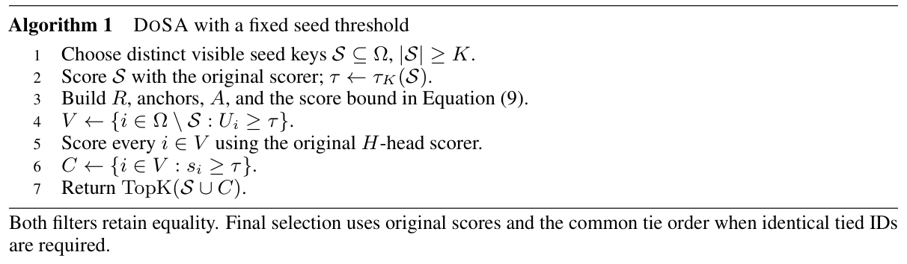
定理 1（精确 Top-K 选择）。在算法 1 中，令 \(\tau=\tau_K(\mathcal S)\) 来自原始评分器计算的至少 \(K\) 个互不相同的可见 key。假设筛选时被排除的每个 key 都满足 \(s_i\le U_i<\tau\)，且没有丢失仍可能入选的候选。采用统一的并列全序时，该算法返回与全域评分相同的 Top-K。若没有指定并列顺序，则返回公式（1）下有效的 Top-K 集合。
定理 1 的证明。考虑任意 key \(i\notin\mathcal S\cup C\)。如果它被筛选排除，则 \(s_i\le U_i<\tau\)。否则，它属于 \(V\setminus C\)，且原始分数满足 \(s_i<\tau\)。在两种情况下，子集阈值命题均给出
\[ s_i<\tau_K(\mathcal S)\le\tau_K(\Omega). \]因此，被丢弃的 key 都不可能属于全域 Top-K，在任意并列顺序下亦然。由于 \(\mathcal S\cup C\) 包含至少 \(K\) 个互不相同的 key，以及所有可能入选的项，对其原始分数应用相同全序，便精确返回 \(\operatorname{TopK}(\Omega)\)。没有指定并列顺序时，选择结果包括严格高于全局第 \(K\) 大分数的全部项，并用分数等于该值的互不相同的 key 填满剩余位置。在这种情况下，不要求并列时返回完全相同的 ID。
保证不丢失候选的候选存储与恢复要求，见附录 C.3。
附录 B. 判定证书紧致程度与计算成本
我们在有限实数运算下分析界的松弛量、选择裕量与筛选成本。这些因素决定效率，与正确性分别讨论。
B.1. 单锚点的最小一致余量
命题 5（最优单锚点余量）。对于向量 \(\mathbf q,\mathbf p\in\mathbb R^D\)，考虑满足下式的所有 \(\beta,c\ge0\) 组合：
\[ [\mathbf q^\top\mathbf k]_+\le\beta[\mathbf p^\top\mathbf k]_++c\lVert\mathbf k\rVert_2\qquad\text{对每个 }\mathbf k\in\mathbb R^D.\qquad\text{(13)} \]可实现的最小系数为 \(c^*=\min_{\beta\ge0}\lVert\mathbf q-\beta\mathbf p\rVert_2\)，即 \(\mathbf q\) 到 \(\mathbf p\) 生成的非负射线的距离。当 \(\mathbf p\ne0\) 时，它在下述取值处达到：
\[ \beta^*=\frac{[\mathbf q^\top\mathbf p]_+}{\lVert\mathbf p\rVert_2^2},\qquad c^*=\lVert\mathbf q-\beta^*\mathbf p\rVert_2. \]当 \(\mathbf p=0\) 时，取 \(\beta^*=0\)，\(c^*=\lVert\mathbf q\rVert_2\)。
命题 5 的证明。正权重头投影界已经确立了 \((\beta^*,c^*)\) 的可行性。我们证明，任何 \(\beta\) 的选择都不允许更小的 \(c\)。当 \(\mathbf q=0\) 时，结论显然成立。如果 \(\mathbf q^\top\mathbf p\le0\)，将 \(\mathbf k=\mathbf q/\lVert\mathbf q\rVert_2\) 代入公式（13）。对每个 \(\beta\ge0\)，锚点项都为零，得到 \(c\ge\lVert\mathbf q\rVert_2=c^*\)。这也包括零锚点的情况。否则，令 \(\mathbf d=\mathbf q-\beta^*\mathbf p\)。该投影满足 \(\mathbf d^\top\mathbf p=0\)。当 \(\mathbf d\ne0\) 时，代入 \(\mathbf k=\mathbf d/\lVert\mathbf d\rVert_2\)，再次使锚点项为零，同时 \([\mathbf q^\top\mathbf k]_+=\lVert\mathbf d\rVert_2\)。因此，对每个 \(\beta\)，都有 \(c\ge c^*\)。若 \(\mathbf d=0\)，取 \(c=0\) 的可行解便达到显然的下界。
在保留锚点中最小化 \(c^*\)，便得到公式（4）。这优化的是一致范数余量，而非逐点优化完整界或优化保留头集合。只要保守地界定实际残差，舍入后的系数仍然有效。
B.2. 判定证书松弛量与激活感知的头选择
对于一个 key，简记 \(x_h=\mathbf q_h^\top\mathbf k\)，\(c_h=|w_h|\)。令
\[ \begin{aligned} B_h(\mathbf k)&=\beta_h[\mathbf q_{j_h^\star}^\top\mathbf k]_++\lVert\mathbf d_h\rVert_2\lVert\mathbf k\rVert_2,\\ \delta_P(\mathbf k)&=\sum_{h\in P}w_h\bigl(B_h(\mathbf k)-[x_h]_+\bigr),\\ Z_A^+(\mathbf k)&=\sum_{h\in A}c_h[x_h]_+,\qquad Z_A^-(\mathbf k)=\sum_{h\in A}c_h[-x_h]_+. \end{aligned} \]命题 6（精确的判定证书松弛量）。采用上述记号，公式（9）的界具有三个非负的松弛量分量：
\[ \boxed{U(\mathbf k)-s(\mathbf k)=\underbrace{\delta_P(\mathbf k)}_{\text{正贡献投影}}+\underbrace{\sum_{h\in N\setminus A}c_h[x_h]_+}_{\text{遗漏的激活负权重头}}+\underbrace{\min\{Z_A^+(\mathbf k),Z_A^-(\mathbf k)\}}_{\text{聚合抵消}}.}\qquad\text{(14)} \]命题 6 的证明。保留头的贡献在 \(U-s\) 中抵消。根据公式（5），正贡献余项为 \(\delta_P\ge0\)。负贡献余项为
\[ \begin{aligned} \delta_N(\mathbf k)&=\sum_{h\in N}c_h[x_h]_+-[Z_A^+-Z_A^-]_+\\ &=\sum_{h\in N\setminus A}c_h[x_h]_++\min\{Z_A^+,Z_A^-\}, \end{aligned} \]其中最后一个等号使用了对 \(z,y\ge0\) 成立的 \(z-[z-y]_+=\min(z,y)\)。这证明公式（14）及其所有分量的非负性。
令 \(M(\mathbf k)=\{h\in N:x_h>0\}\) 为被省略的负权重头中已激活的头。选择 \(A=M(\mathbf k)\) 会使两个负贡献松弛项均为零；加入未激活的头反而可能引入抵消。上述逐个正权重头的分解使用三角不等式余量 \(E_P\)。将其替换为有效的联合余量，仍能保持松弛量非负，但会改变正贡献项。
支撑集与保留头选择。对于任意支撑集，负贡献松弛量满足
\[ \begin{aligned} 0\le\delta_N(\mathbf k)&\le\sum_{h\in A\triangle M(\mathbf k)}c_h|\mathbf q_h^\top\mathbf k|\\ &\le\lVert\mathbf k\rVert_2\sum_{h\in A\triangle M(\mathbf k)}a_h,\qquad a_h=c_h\lVert\mathbf q_h\rVert_2, \end{aligned}\qquad\text{(15)} \]其中，\(\triangle\) 表示对称差。第一个不等式用 \(Z_A^-\) 界定聚合抵消；第二个不等式来自 Cauchy–Schwarz 不等式。
对于非零样本 key，令 \(p_h\) 为观测到的激活频率。对公式（15）最后一个表达式求平均，得到可分离的替代目标
\[ J(A)=\sum_{h\in A}a_h(1-p_h)+\sum_{h\in N\setminus A}a_hp_h.\qquad\text{(16)} \]如果掩码是同一组实数点积的符号，则 \(J(A)\) 是 \(\delta_N(\mathbf k)/\lVert\mathbf k\rVert_2\) 样本均值的上界。每个头独立贡献 \(a_h(1-p_h)\) 或 \(a_hp_h\)，因此逐分量多数选择 \(A^*=\{h:p_h\ge1/2\}\) 使 \(J\) 最小。最小值为 \(\sum_ha_h\min(p_h,1-p_h)\)。
如果保留全部正权重头，再计算 \(b\) 个负权重头，就能移除它们对应的替代目标项。因此，保留 \(a_h\min(p_h,1-p_h)\) 最大的 \(b\) 个头，并结合多数支撑集，可以联合最小化剩余替代目标。这优化的是抽样得到的激活不一致界，而非候选存活数量或延迟。零附近经过舍入的激活符号可能影响替代目标的解释，但由此得到的任意支撑集仍然安全。
B.3. 选择裕量与筛选成本
令 \(\tau^*\) 为全域第 \(K\) 大分数，\(\Delta_i=\tau^*-s_i\) 为一个 key 的选择裕量，\(b=\tau^*-\tau\ge0\) 为阈值差额，\(\delta_i=U_i-s_i\ge0\) 为界的松弛量。于是
\[ \boxed{U_i<\tau\quad\Longleftrightarrow\quad\Delta_i>\delta_i+b.}\qquad\text{(17)} \]更强的种子减小 \(b\)；更紧的判定证书减小 \(\delta_i\)。若 \(\delta_i\le\epsilon\)，则通过筛选的候选位于 \(\{i:s_i\ge\tau^*-\epsilon-b\}\) 中。这一边界区域内的数量不一定很少，分数并列的 key 会自动通过。同样的关系也适用于计算分数 \(s_i^{\rm ref}\) 与有效数值界 \(U_i^{\rm num}\)；没有有效界的 key 单独保留。
算术成本与头预算。通过筛选的候选数量决定筛选能否节省算术运算。令 \(N_0\) 个 key 在初始化时被完整评分，\(N_s\) 个 key 接受筛选，\(M\) 个通过筛选。使用 \(d_a\) 个辅助行时，逻辑点积次数近似为
\[ D_{\rm base}=H(N_0+N_s),\qquad\text{(18)} \] \[ D_{\rm DoSA}=HN_0+(r+d_a)N_s+HM.\qquad\text{(19)} \]记 \(f=N_0/(N_0+N_s)\)，\(m=M/N_s\)，则归一化工作量为
\[ \frac{D_{\rm DoSA}}{D_{\rm base}}\approx f+(1-f)\left(\frac{r+d_a}{H}+m\right).\qquad\text{(20)} \]只有当 \(m<1-(r+d_a)/H\) 时，筛选才节省逻辑点积。更精确地，令 \(p(r)=1-m(r)\) 为预算 \(r\) 下的排除比例。在这一逻辑工作量模型内，对固定初始化和辅助行数，
\[ D(r+\Delta r)<D(r)\quad\Longleftrightarrow\quad p(r+\Delta r)-p(r)>\frac{\Delta r}{H}.\qquad\text{(21)} \]只有在避免了足够多的完整重新评分时，额外增加一个头才有收益。如果辅助行数发生变化，就用 \(\Delta r+\Delta d_a\) 替代 \(\Delta r\)；改变锚点或支撑集不一定会使排除比例单调改善。该模型不包含方案准备、key 摘要、Tensor Core 填充、选择和恢复。每个 key 仍然被扫描；如果所有 key 都通过，筛选就会增加工作。
附录 C. 数值条件与恢复
本节给出在原始评分器算术运算下保持精确选择的充分条件，以及候选存储与恢复要求。
C.1. 参考分数与 FP8 判定证书
令 \(s_i^{\rm ref}\) 为原始索引器计算得到的分数。数值支配关系 \(s_i^{\rm ref}\le U_i^{\rm num}\) 必须独立于 \(s_i\le U_i\) 另行建立。定理 1 对并列顺序的要求也适用于计算分数，等于阈值的情况在剪枝中保留。
当种子阈值与候选分数使用同一个原始评分器，且筛选时排除的每个 key 都满足 \(s_i^{\rm ref}\le U_i^{\rm num}<\tau\) 时，定理 1 可应用于 \(s_i^{\rm ref}\) 和 \(U_i^{\rm num}\)。失败处理见附录 C.3。
将 FP8 key 写为 \(\mathbf k_i=\alpha_i\bar{\mathbf k}_i\)，其中 \(\alpha_i>0\)，\(\bar{\mathbf k}_i\) 为其 \(D\) 维载荷。在公式（9）的基本形式中，两个辅助行近似负贡献聚合：
\[ \mathbf a_A=\mathbf v_0+\mathbf v_1+\mathbf e_A.\qquad\text{(22)} \]它们的点积在 ReLU 之前相加。使用存储的折叠权重 \(\omega_j\)，以载荷为单位的基本筛选表达式为
\[ \widehat U_i=\operatorname{fl}_{\rm screen}\left(\sum_{j\in R}\omega_j[\mathbf q_j^\top\bar{\mathbf k}_i]_+-[(\mathbf v_0+\mathbf v_1)^\top\bar{\mathbf k}_i]_+\right).\qquad\text{(23)} \]绝对值形式。保留每个正权重头时，\(P=\varnothing\)。设 \(\mathbf V=\mathbf a_A-\tfrac12\sum_{j\in R}w_j\mathbf q_j\)。利用 \([x]_+=(x+|x|)/2\)，有
\[ \begin{aligned} U_{\rm abs}(\mathbf k)&=\tfrac12\sum_{j\in R}w_j|\mathbf q_j^\top\mathbf k|-\mathbf V^\top\mathbf k\\ &=S_R(\mathbf k)-\mathbf a_A^\top\mathbf k\ge S_R(\mathbf k)-[\mathbf a_A^\top\mathbf k]_+\ge s(\mathbf k). \end{aligned}\qquad\text{(24)} \]相对于公式（9），额外松弛量为 \([-\mathbf a_A^\top\mathbf k]_+\)。32 头实现在 \(r=14,16\) 时使用这一形式；\(r=20\) 的路径保留带正贡献投影的基本形式。用两个带缩放的 FP8 行编码 \(\mathbf V=\mathbf v_0+\mathbf v_1+\mathbf e_V\)，得到
\[ \widehat U_i=\operatorname{fl}_{\rm screen}\left(\tfrac12\sum_{j\in R}w_j|\mathbf q_j^\top\bar{\mathbf k}_i|-(\mathbf v_0+\mathbf v_1)^\top\bar{\mathbf k}_i\right).\qquad\text{(25)} \]两种形式都使用 \(r+2\) 个逻辑点积；通过筛选的候选得到原始 \(H\) 头分数。数值余量覆盖辅助向量表示、权重形成和算术误差，以及任何被省略的正残差。
令 \(\rho_i\ge\lVert\bar{\mathbf k}_i\rVert_2/\sqrt D\) 为保守的 key RMS 摘要。数值判定证书具有如下形式：
\[ U_i^{\rm num}=\operatorname{Eval}_{\rm up}\left[\alpha_i\bigl(\widehat U_i+\rho_iC+\varepsilon_{\rm raw}\bigr)+\varepsilon_{\rm out}\right].\qquad\text{(26)} \]非负余量 \(C\)、\(\varepsilon_{\rm raw}\) 与 \(\varepsilon_{\rm out}\) 满足附录 C.2 的条件。算子 \(\operatorname{Eval}_{\rm up}\) 通过定向舍入或显式误差界，从上方包络该表达式；仅使用向最近值舍入并不足够。这些条件保证，对于任一种筛选表达式，都有 \(s_i^{\rm ref}\le U_i^{\rm num}\)。
C.2. 误差余量与保守的 key 摘要
令 \(E_g^+\) 为组 \(g\) 的有效正残差余量的上包络，使用附录 A.1 的分组三角界或联合界。残差形成和组范数必须向上包络；联合界还要求保守地处理加权残差、求和、Gram 矩阵元素和最终范数。假设非负坐标包络 \(\mathbf J\) 及绝对误差余量满足
\[ s_i^{\rm ref}\le\alpha_i\left(\widehat U_i+\sum_gE_g^+\lVert\bar{\mathbf k}_i^{(g)}\rVert_2+\sum_dJ_d|\bar k_{i,d}|+\varepsilon_{\rm raw}\right)+\varepsilon_{\rm out}.\qquad\text{(27)} \]该包络覆盖辅助向量重构、权重形成、筛选算术运算以及原始评分器的算术运算。在基本形式中，根据 ReLU 的 Lipschitz 性质，聚合误差向 \(J_d\) 贡献 \(|e_{A,d}|\)，折叠权重误差贡献 \(\sum_{j\in R}|\widetilde w_j-\omega_j||q_{j,d}|\)。在绝对值形式中，\(E_g^+=0\)，辅助向量的贡献为 \(|e_{V,d}|\)；绝对值项和线性项可以采用相同的坐标包络处理。下溢及其他绝对误差，根据发生在 key 缩放之前还是之后，计入 \(\varepsilon_{\rm raw}\) 或 \(\varepsilon_{\rm out}\)。
在组内应用 Cauchy–Schwarz 不等式，再在组间应用，说明任意满足下式的保守包络都可作为充分的 RMS 系数：
\[ C\ge\sqrt D\left(\sum_g\bigl[E_g^++\lVert\mathbf J^{(g)}\rVert_2\bigr]^2\right)^{1/2}.\qquad\text{(28)} \]结合保守的 \(\rho_i\)，便确立公式（26）。在绝对值路径中，定向 FP64 区间包络 \(\mathbf V\) 及其重构残差。方案规划器将这些量与筛选及参考算术运算的余量结合，将 \(C\) 向外舍入为 FP32；内核使用向上舍入计算修正项与正的 key 缩放。
保守的 key RMS。存储的摘要必须满足 \(\rho_i\sqrt D\ge\lVert\bar{\mathbf k}_i\rVert_2\)。这要求保守地计算范数，并在存储摘要的格式中实现向上覆盖；向最近值舍入的 RMS 不足以满足要求。非有限载荷，或无法确立覆盖关系，都会使判定证书失效。
C.3. 候选存储与全域恢复
最终输出包含 \(K\) 个条目，但等待完整评分或选择的候选可能多得多。缓冲区容量 \(C_{\rm buf}\) 并不限制满足 \(U_i\ge\tau\) 的 key 数量：如果所有分数都等于 \(\tau\)，即使界完全精确，每个 key 也都会通过。缓冲区满时，必须处理已有内容，并通过对原始分数进行精确 Top-K 合并来归约，或者扩展缓冲区，或者执行全域恢复。丢弃溢出候选可能丢失必要的 Top-K ID。分块处理必须保持算法 1 的选择与并列顺序约定。
无效的缩放因子、RMS 摘要或非有限界都会阻止剪枝。Query 级错误持续保持标记，直到执行全域恢复：在全部可见 key 上运行原始评分器与选择器，包括错误检测之前已被丢弃的 key。从不完整缓冲区中重新选择并不足够。异常值遵循后端的处理策略；有限分数定理不定义 NaN 语义。
附录 D. 补充实验分析
D.1. 索引器性能剖析方法
图 1 使用真实模型权重与文本，并禁用 DoSA 和 LiteTopK。每个模型–长度组合包含两个独立请求，均清空前缀缓存。时间取 Nsight Systems GPU 时间区间在各请求和张量并行 rank 上的平均值，并用 CUDA event 交叉核对。索引器区间包含 query/key 准备、key 缓存访问、评分和选择；分母为完整模型 prefill GPU 时间区间。这些量不包含 CPU token 化与请求传输，且与 TTFT 不同。
GLM-5.2 使用 32K prefill 分块，DeepSeek-V3.2 使用 16K 分块，两者都采用 TP8。FLOPs 统计因果逻辑矩阵工作量，包括激活的专家与稀疏 attention；一次 FMA 计为两次运算，不因张量并行而重复计数。Top-K 比较、逐元素操作和填充不属于矩阵 FLOPs。这里，1K 表示 1,024 个 token，375K 表示 384,000 个 token，约 1M 表示 1,048,569 个 token。DeepSeek 在超出其声明上下文范围时的测量，支持的是对计算扩展性的观察，而非对任务准确率的主张。
D.2. 判定证书组件消融
我们在第 4 节描述的各领域样本集上，分别考察判定证书组件的贡献。对 GLM-5.2 的每个产生索引的层（共 21 层），我们使用相同的初始候选池，重放最后 4K 个 query。（本句原文跨至第 19 页，已接续。）
（本页开头关于相同初始候选池的跨页句，已接续至第 18 页。）我们将 DoSA 与四种变体比较：聚合全部被省略的负权重头、去除负贡献聚合、仅按强度选择保留的负权重头，以及去除正权重头投影。对每种变体、每个输入和每层都计时十次。
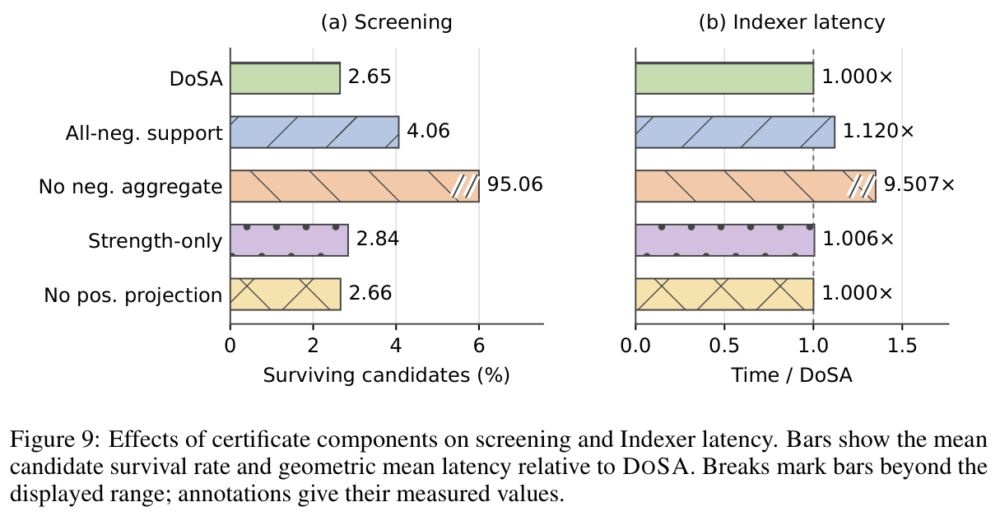
图 9 表明，去除负贡献聚合，使候选存活比例从 2.65% 增长到 95.06%，索引器时间增加至 9.51 倍。这些计时包含候选池满时的恢复。聚合所有负权重头也会削弱过滤：存活比例升至 4.06%，延迟增加 12.0%，支持使用利用激活信息的支撑集。在此工作负载中，仅按强度选头与去除正权重头投影的总体影响小得多。只有 0.42% 的受评估 query–层行需要正权重头投影。附录 D.3 按层分解这些影响。
D.3. 逐层判定证书行为
图 10 按层分解附录 D.2 的实验，对相同的各领域样本集进行聚合。去除负贡献聚合，会使大多数层中几乎所有候选都存活。聚合所有负权重头的成本，在早期层最明显：第 2 层的相对索引器延迟达到 3.41 倍。
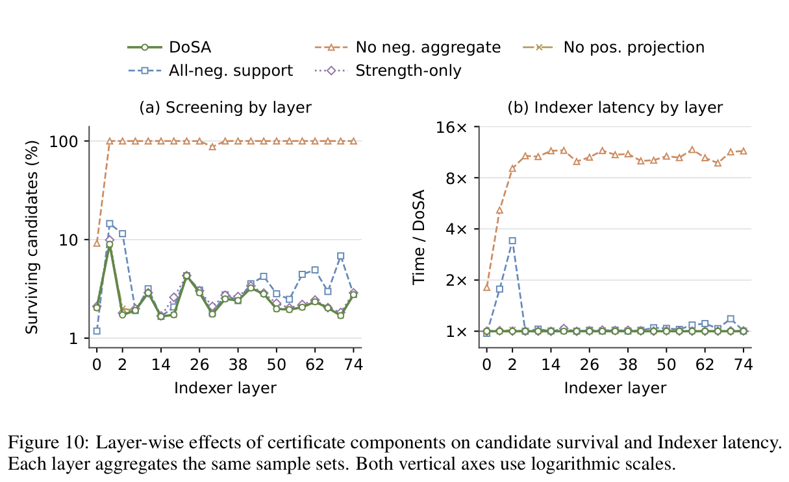
D.4. 逐层检索加速
对于判定证书分析使用的 GLM-5.2 样本集，我们在全部 21 个产生索引的层上重放最后 32K 个 query（共 252 个单元格）。图 11 和图 12 使用每种方法、每个单元格的 12 次重放，以基线延迟中位数除以 DoSA 延迟中位数。计时覆盖已准备好的 query 与 key 上的评分和选择，不包含 query/key 准备。热图展示输入与层之间的差异。
测量范围。该矩阵保留原始运行的 247 个单元格，并在修复候选存储容量后，用三种方法的匹配测量替换五个单元格。重新测量的单元格为第 26 层的 EN01，以及第 1 层的 EN02、EN04、ZH04 和 CD04。修复保留了评分与选择规则、四锚点初始化，以及 16K 的内部 query 临时存储。在约 1M key 容量下，它为每个 query 预留 1,024 个候选 ID 页和 114,688 条输出记录，相比原始分配增加了 9.94 GiB 工作空间。修复后没有重新运行整个矩阵。
在这些已测量的单元格中，相对 SGLang 的 252 次比较里，DoSA 有 251 次（99.6%）更快；相对 LiteTopK 的 252 次比较里，有 250 次（99.2%）更快。全部 21 层都在一个或多个输入上，相对 SGLang 达到至少 2 倍加速，最高达到 3.74 倍；相对 LiteTopK 的加速最高达到 2.08 倍。三次更慢的比较增加了 0.7%–9.0% 延迟，并保留在图中。在各输入样本上，每一层相对两个基线的加速比中位数都超过 1 倍。
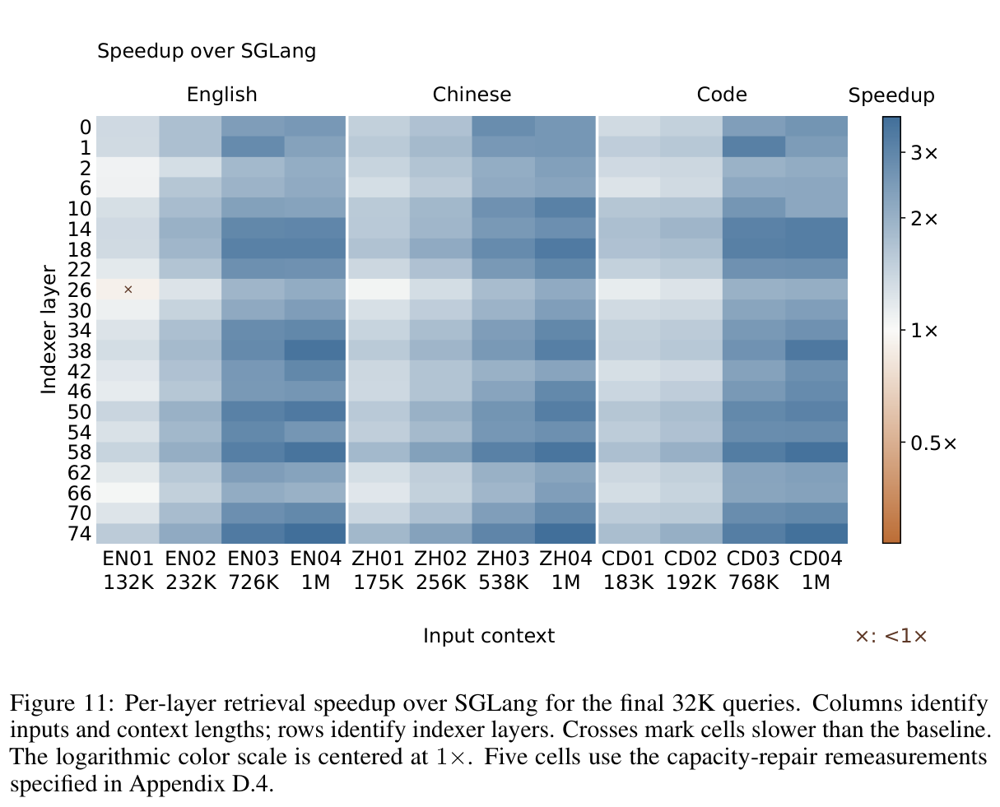
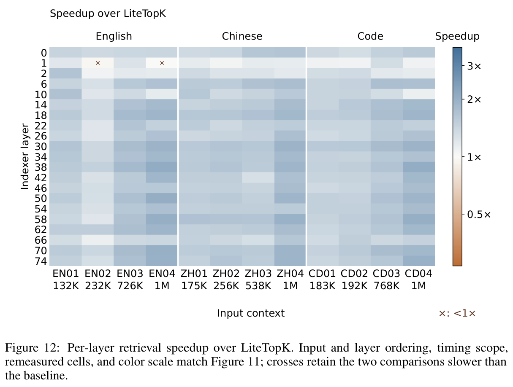